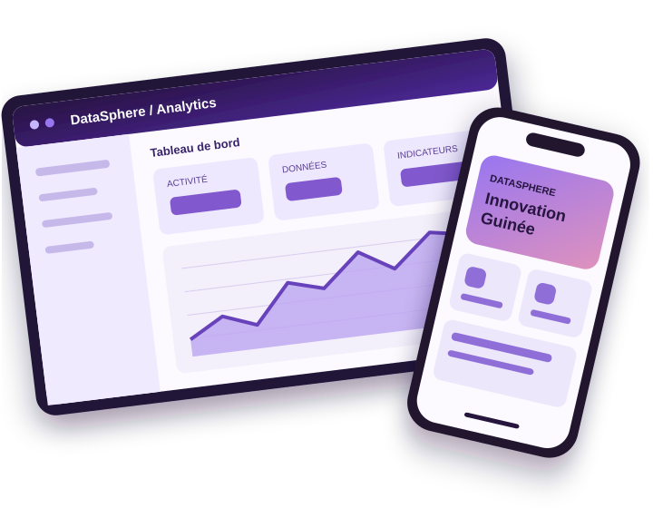

Data & AI
Data architecture, engineering, analytics, business intelligence, governance and artificial intelligence.
DataSphere Innovation Guinée is a technology company project focused on digital transformation for businesses and public institutions, with an ambition to serve Guinea, France and international markets.
Contact form currently available in French; messages may be written in English.

Data architecture, engineering, analytics, business intelligence, governance and artificial intelligence.
Business applications, SaaS engineering, integration, cloud architecture, DevOps and quality assurance.
Security governance, IAM, cloud and application security, authorised vulnerability assessments, incident response and business continuity. Scope and specialist availability are agreed for each engagement.
Management accounting, performance management, audit support, bids, pre-sales and project management.
Specialists working onsite, remotely or in hybrid arrangements, subject to availability.
Defined scope, deliverables, acceptance criteria and knowledge transfer.
Strategy, architecture, assessment and delivery planning.
For project enquiries, applications or partnerships, use our French contact form. This is a local preview; no email is sent.
Contact DSIG